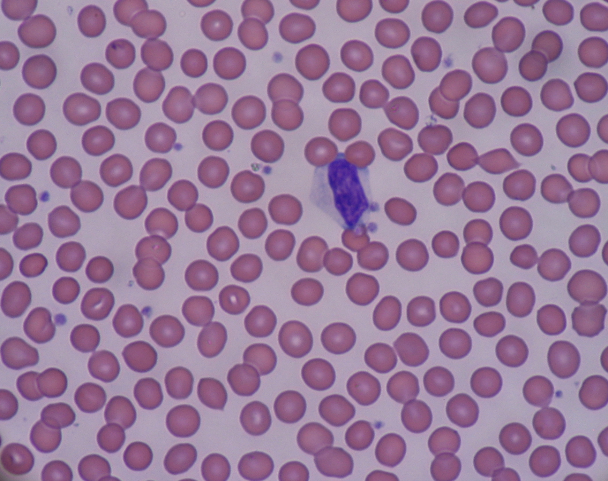
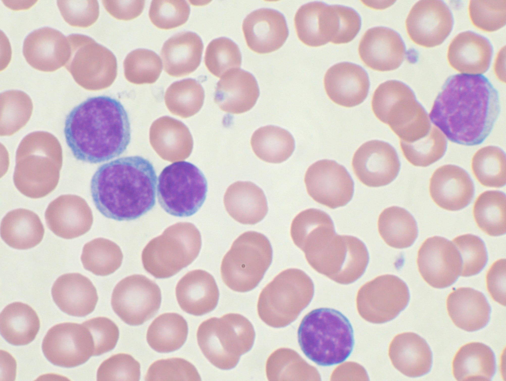

Which cells increased?
A differential identifies the white cell types. Extra neutrophils, extra lymphocytes, and circulating blasts raise different questions—even when total counts are similar.
Leukocytosis means a higher-than-expected white blood cell count. The total is a clue; the cell types and the clinical context help explain it.
Each filled dot represents 1,000 WBCs/µL.
This is a count illustration, not a microscope field.
A count of 7,000 WBCs/µL falls within the adult interval used here. The cell types and the rest of the CBC still matter.
That is 4.5–11.0 × 10⁹/L. Reference intervals vary by laboratory and age; children can have different ranges.
All three numbers are hypothetical teaching examples, not patient results or diagnostic cutoffs for leukemia.
A differential identifies the white cell types. Extra neutrophils, extra lymphocytes, and circulating blasts raise different questions—even when total counts are similar.
Large numbers of abnormal cells may coexist with poor immune function. Acute leukemia can also present with a normal or low total WBC count.
Infection, inflammation, stress, and some medicines can raise the count. Leukemia can also raise it. The laboratory examines the smear and combines several kinds of evidence.

An activated defender can look unusual without being a cancer cell.
Explore the slide →
Mature-looking lymphocytes can still be part of an abnormal population.
Explore the slide →These are separate teaching photographs. They are not paired with the simulated counts above, and their magnifications differ.
No. The differential, cell appearance, other blood counts, and additional testing can reveal abnormalities even when the total WBC count falls within a reference interval.